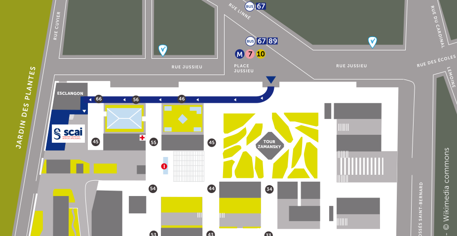

Welcome to the website of the Parisian Seminar on the Mathematics of Imaging !
The goal of this seminar is to cover the fields of the mathematics of imaging in a very wide sense (including for instance signal processing, image processing, computer graphics, computer vision, various applications and connections with statistics and machine learning). It is open to everyone. It takes place at Institut Henri Poincaré (SCAI in Sept.) on the second (third in Sept./Nov./Apr.) Tuesday of each month from 2pm to 4pm. Each seminar is composed of two presentations.
You can subscribe or unsubscribe to the mailing list of the seminar and to the agenda of the seminar.
⚠ September seminar is taking place at SCAI

Click on the title to read the abstract.
Guy Gilboa (Technion)
Abstract: Foundation models are a key platform which implicitly encodes world knowledge. In this talk we first focus on vision-language models, such as CLIP, and investigate their geometric behavior and logic behind the high-dimensional feature encoding. For instance, we find that as image or text become more rare and distinct they are encoded further from the center of the embedding. We explain why InfoNCE loss leads to that behavior. We also find out empirically that each modality can be well modeled statistically as admitting a multivariate Gaussian distribution. This finding is then proved formally, where we show InfoNCE asymptotically induces Gaussian statistics. Finally, we connect two major image foundation models – encoders and generators, through a universal normal embedding hypothesis. A surprising consequence of this hypothesis is demonstrated, where generative diffusion “noise” contains semantic data which can be accessed by linear probing for either classification or editing. This talk is based on 6 recent papers in the group published at ICML 2025, ICLR 2026 and CVPR 2026.
September 15th, 2pm, SCAI seminar room - Esclangon building, 1st floor, Campus Pierre et Marie Curie, 4 place Jussieu, Paris.
Title: How to Encode World Knowledge? ⬇
The list of seminars prior to summer 2025 is available here.
Gabriel Victorino Cardoso
(Mines Paris)
Abstract: In this talk I'll focus mainly in the paper [1], where we show that under reasonable hypothesis score-based generative model has the same advantageous forgetting properties that have been shown to exist in several Markov chain based algorithms. We will then dive into how such forgetting can be interesting from the theoretical point of view as well as from the practical point of view, also from the aspect of posterior sampling.
[1] Strasman, S., Cardoso, G., Corff, S. L., Lemaire, V., & Ocello, A. (2026). On Forgetting and Stability of Score-based Generative models. arXiv preprint arXiv:2601.21868.
June 9th, 2pm, room Room Yvette Cauchoix (Perrin building).
Title: On error propagation on score-based generative models and possible implications to posterior sampling ⬇
Johannes Hertrich
(ENS)
Abstract: This talk explores learned and generative regularization methods for solving inverse problems in imaging. We start with the task of learning explicit regularization functionals, providing a unified framework that consolidates diverse learned regularization approaches. This enables systematic comparison of their architectural designs, training strategies, and practical performance. Afterwards, we consider the case where the regularizer is given by an unconditional denoising diffusion model and present a self-supervised fine-tuning algorithm for sampling from the posterior distribution in an inverse problem. Finally, we numerically investigate the robustness of generative and non-generative priors under imperfect settings, such as out-of-distribution data and mismatched forward models, and draw conclusions on which approach is suitable in which setting.
June 9th, 3pm, room Room Yvette Cauchoix (Perrin building).
Title: Learned and Generative Regularization for Inverse Problems ⬇
Alessio Spagnoletti
(Université Paris Cité)
Abstract: Recent advances in distilled latent diffusion models (aka Consistency Models) have opened new possibilities for solving inverse problems with strong generative priors and low computational cost. This talk begins with LATINO-PRO, a plug-and-play framework for text-conditioned image restoration that combines a stochastic auto-encoding step derived from latent distilled models with proximal data-consistency updates. The resulting method provides a gradient-free posterior sampling strategy that is both memory-efficient and accurate, while prompt optimization further improves performance by automatically adapting the semantic conditioning to the observed measurements. We then turn to LVTINO, an extension of this framework to video restoration. By combining video priors for temporal coherence with image priors for fine spatial detail, LVTINO enables high-definition video reconstruction with strong measurement fidelity and improved temporal stability. The final part of the talk discusses the theoretical motivation behind the stochastic auto-encoder, viewing it as an approximate contractive transport toward the learned prior and relating its behavior to the analyses of multi-step Consistency Models.
May 12th, 2pm, room Amphi Hermite (Borel building).
Title: The LATINO Family of Inverse Solvers: few-step priors for high-res image and video restoration ⬇
Yuanzhi Zhu
(École Polytechnique)
Abstract: Pretrained diffusion and flow models have emerged as powerful priors for image restoration, capturing the many plausible reconstructions consistent with a single degraded observation. This talk begins with DiffPIR (CVPRW 2023), a training-free plug-and-play framework that uses a pretrained unconditional diffusion model as the denoiser inside an HQS splitting scheme, providing a single ~100-step recipe for super-resolution, deblurring and inpainting. We then turn to OFTSR (ICLR 2026), which distills a conditional rectified flow into a one-step student via trajectory-aligned distillation while exposing a tunable fidelity-realism trade-off at inference. The final part of the talk covers MFSR (arXiv 2026) and its follow-up SMFSR, which use a MeanFlow / SplitMeanFlow average-velocity formulation to distill a multi-step real-world SR teacher into a single- or few-step student. This talk will close with a unifying view of these methods, and discuss future directions worth exploring next.
May 12th, 3pm, room Amphi Hermite (Borel building).
Title: Toward One-Step Image Restoration with Generative Priors: From Plug-and-Play Diffusion to Flow Distillation ⬇
Clément Bonet
(CMAP, École Polytechnique)
Abstract: The Busemann function has recently found much interest in a variety of geometric machine learning problems, as it naturally defines projections onto geodesic rays of Riemannian manifolds and generalizes the notion of hyperplanes. As several sources of data can be conveniently modeled as probability distributions, it is natural to study this function in the Wasserstein space, which carries a rich formal Riemannian structure induced by Optimal Transport metrics. In this work, we investigate the existence and computation of Busemann functions in Wasserstein space, which admits geodesic rays. We establish closed-form expressions in two important cases: one-dimensional distributions and Gaussian measures. These results enable explicit projection schemes for probability distributions on $mathbb{R}$, which in turn allow us to define novel Sliced-Wasserstein distances over Gaussian mixtures and labeled datasets. We demonstrate the efficiency of those original schemes on synthetic datasets as well as transfer learning problems.
April 7th, 2pm, room Room Yvette Cauchoix (Perrin building).
Title: Busemann Functions in the Wasserstein Space: Existence, Closed-Forms, and Applications to Slicing ⬇
Louis Hauseux
(INRIA)
Abstract: This talk bridges statistical theory and practical image processing. We begin by defining clustering as the recovery of high-density level sets from a statistical distribution in the Euclidean space. We show how to solve this problem efficiently using geometric (hyper)graphs, providing a theoretical foundation for hierarchical methods like HDBSCAN through percolation theory. Finally, we view images as graphs and demonstrate how to hack the hierarchical clustering extraction by customizing loss functions. We illustrate this approach with two applications: automatic fault detection in 2D images and unsupervized instance segmentation on 3D LiDAR point clouds.
April 7th, 3pm, room Room Yvette Cauchoix (Perrin building).
Title: From Statistics to Graphs: Hierarchical Clustering for Image Analysis ⬇
Nelly Pustelnik
(CNRS, ENS Lyon)
Abstract: In recent years, deep learning methods have transformed the field of image restoration, achieving significantly higher reconstruction quality than traditional variational approaches. Many current strategies combine principles from both variational models and neural networks, forming what are known as model-based neural networks. Among these, two main frameworks stand out: Unfolded neural networks and Plug-and-Play (PnP) methods. Unfolded networks emulate the iterations of proximal algorithms (also referred to as unrolled algorithms, e.g., unrolled forward–backward) to create task-specific end-to-end architectures, while PnP methods rely on pretrained denoisers to solve reconstruction problems without additional training. However, automatic differentiation in unfolded networks requires relatively shallow architectures (a small number of unrolled iterations) due to computational constraints, whereas PnP methods, though theoretically convergent, must be iterated until convergence and often underperform unfolded approaches.
March 10th, 2pm, room Room Yvette Cauchoix (Perrin building).
Title: ReTune: Restarted Truncated unrolled networks to bridge the gap between Plug-and-Play and Unfolded Neural Networks for image restoration ⬇
This work focuses on a specific training procedure for unfolded neural networks that still uses automatic differentiation while maintaining theoretical convergence guarantees. More precisely, our analysis shows that an unfolded neural network can be restarted to infer solutions of a variational problem with fixed parameters. Furthermore, we introduce the ReTune (Restarted Truncated unrolled networks) procedure to estimate the underlying parameters in a simple fashion, building on theoretical developments inspired by bi-level literature (Deep Equilibrium,Jacobian-free propagation). A deeper analysis is provided in the context of unrolled forward–backward iterations to highlight the interplay between the network depth and the number of restarts in ReTune, based on the Lipschitz properties of the algorithmic scheme. In particular, the depth controls the approximation error of a Jacobian-free step, whereas restarting the unrolled neural network allows one to reach the equilibrium point. This theoretical analysis is supported by numerical experiments showing that the proposed ReTune procedure goes beyond traditional learning schemes, improves performance compared to PnP strategies, and provides stronger guarantees than standard unfolded approaches.
Nicolas Papadakis
(Institut de Mathématiques de Bordeaux)
Abstract: We investigate the challenge of sampling from distributions defined by non-convex potentials using the Unadjusted Langevin Algorithm (ULA). Our analysis establishes the stability of the discrete-time ULA under drift approximations, provided the potential is non-convex and strongly convex at infinity. To this end, we focus on the Proximal Stochastic Gradient Langevin Algorithm (PSGLA), which integrates the forward-backward optimization framework with a ULA step. By leveraging our stability results and properties of the Moreau envelope, we present the first convergence proof for PSGLA in the context of non-convex potentials. We validate our theoretical findings empirically using synthetic data and real-world imaging inverse problems. Our experiments illustrate that PSGLA not only preserves the restoration quality of posterior sampling but also achieves faster convergence rates compared to the standard Stochastic Gradient Langevin Algorithm.
March 10th, 3pm, room Room Yvette Cauchoix (Perrin building).
Title: Posterior Sampling with the Proximal Stochastic Gradient Langevin Algorithm ⬇
Ali Joundi
(Institut de Mathématiques de Bordeaux)
Abstract: Many crucial tasks in image processing and computer vision are formulated as inverse problems. Therefore, it is of great importance to design efficient and robust algorithms to solve these problems. In this paper, we focus on generalized projected gradient descent (GPGD) algorithms where generalized projections are realized with learned neural networks as they provide state-of-the-art results for imaging inverse problems. Indeed, neural networks allow for projections onto unknown low-dimensional sets that model complex data, such as images. We call these projections deep projective priors. In generic settings, when the orthogonal projection onto a low-dimensional model set is used, it has been shown, under a restricted isometry assumption, that the corresponding orthogonal PGD converges with a linear rate, yielding near-optimal convergence (within the class of GPGD methods) in the classical case of sparse recovery. However, for deep projective priors trained with classical mean squared error losses, there is little guarantee that the hypotheses for linear convergence are satisfied. In this paper, we propose a stochastic orthogonal regularization of the training loss for deep projective priors. This regularization is motivated by our theoretical results: a sufficiently good approximation of the orthogonal projection guarantees linear stable recovery with performance close to orthogonal PGD. We show experimentally, using two different deep projective priors (based on autoencoders and on denoising networks), that our stochastic orthogonal regularization yields projections that improve convergence speed and robustness of GPGD in challenging inverse problem settings, in accordance with our theoretical findings.
February 3rd, 2pm (moved from 3pm to 2pm due to cancellation of the other talk), room Room Yvette Cauchoix (Perrin building).
Title: Stochastic Orthogonal Regularization for deep projective priors ⬇
The talk will be given in French.
Samuel Hurault
(CNRS, LIGM)
Abstract: Sampling from an unknown distribution, accessible only through discrete samples, is a fundamental problem at the core of generative AI. The current state-of-the-art methods follow a two-step process: first, estimating the score function (the gradient of a smoothed log-distribution) and then applying a diffusion-based sampling algorithm. The resulting distribution's correctness can be impacted by three major factors: the generalization and optimization errors in score matching, and the discretization error in the diffusion. In this paper we provide, in the Gaussian setting, the exact Wasserstein sampling error that arises from these four error sources. This allows us to rigorously track how the anisotropy of the data distribution (encoded by its power spectrum) interacts with key parameters of the end-to-end sampling method.
December 2nd, 2pm, room Room Yvette Cauchoix (Perrin building).
Title: From Score Matching to Diffusion: a fine-grained error analysis in the Gaussian setting ⬇
Nils Laurent
(LASPI Roanne)
Abstract: Les algorithmes de reconstruction d'images Plug-and-Play (PnP) sont fondés sur des réseaux de neurones profonds débruiteurs et utilisés comme a priori pour la résolution de problèmes inverses. Malgré leur flexibilité, les algorithmes PnP requièrent un large nombre d'itérations pour converger et leur performance est sensible au choix de l'initialisation et des hyperparamètres. Dans cette présentation, nous considérons un nouvel algorithme PnP multiniveaux qui accélère la convergence en combinant des itérations faites à différentes échelles et améliore la robustesse à l'initialisation ainsi qu'aux hyperparamètres grâce à une stratégie exploitant les échelles plus grossières pour la résolution aux échelles fines. Nous pourrons observer par une série d'expériences numériques incluant le dématriçage et l'inpainting que cette nouvelle méthode est plus rapide et donne de meilleures reconstructions que d'autres algorithmes PnP états-de-l'art.
December 2nd, 3pm, room Room Yvette Cauchoix (Perrin building).
Title: Restauration d'Images par Algorithme Plug-and-Play Multiniveaux ⬇
Kimia Nadjahi
(CNRS, ENS PARIS)
Abstract: Conformal Prediction (CP) is a principled framework for quantifying uncertainty in blackbox learning models, by constructing prediction sets with finite-sample coverage guarantees. Traditional approaches rely on scalar nonconformity scores, which fail to fully exploit the geometric structure of multivariate outputs, such as in multi-output regression or multiclass classification. Recent methods addressing this limitation impose predefined convex shapes for the prediction sets, potentially misaligning with the intrinsic data geometry. We introduce a novel CP procedure handling multivariate score functions through the lens of optimal transport. Specifically, we leverage Monge-Kantorovich vector ranks and quantiles to construct prediction regions with flexible, potentially non-convex shapes, better suited to the complex uncertainty patterns encountered in multivariate learning tasks. We prove that our approach ensures finite-sample, distribution-free coverage properties, similar to typical CP methods. We then adapt our method for multi-output regression and multiclass classification, and also propose simple adjustments to generate adaptive prediction regions with asymptotic conditional coverage guarantees. Finally, we evaluate our method on practical regression and classification problems, illustrating its advantages in terms of (conditional) coverage and efficiency. This is joint work with Gauthier Thurin (CNRS, ENS Paris) and Claire Boyer (Université Paris-Saclay).
November 4th, 2pm, room Amphi Darboux (Borel building).
Title: Optimal Transport-based Conformal Prediction ⬇
Laetitia Chapel
(Institut Agro Rennes-Angers, IRISA)
Abstract: Optimal Transport (OT) has emerged as a fundamental tool in modern machine learning, mainly due to its ability to provide meaningful comparisons between probability distributions. One of the key strengths of OT is its dual nature: it not only introduces a mathematically rigorous framework defining Wasserstein distances but also constructs an optimal coupling (or transport plan) between distributions. This coupling reveals explicit correspondences between samples, enabling a broad spectrum of applications. Despite the numerous successes of optimal transport in machine learning and the availability of many tools to approximate Wasserstein distances, computing OT plans remains computationally challenging. In this talk, I will present a new methodology to efficiently approximate sliced OT plans. The formulation can be recast as a bilevel optimization problem, and I will propose a differentiable generalized approximation that can be further adapted to data residing on manifolds. Finally, I will demonstrate the practical value of this approach by introducing a novel sliced OT-based conditional flow matching method for image generation, an application where fast computation of transport plans is crucial.
November 4th, 3pm, room Amphi Darboux (Borel building).
Title: Sliced optimal transport plans with an application to conditional flow matching ⬇
Raphaël Achddou
(ESIEE Paris, LIGM)
Abstract: Neural Networks have surpassed traditional prior-based approaches in solving inverse problems, but their black-box nature hinders their interpretability and confidence. To address these issues, a potential approach is to synthesize training images with controlled statistical properties. In this talk, I’ll present how a simple occlusion-based image model called the Dead Leaves model can be used to generate high-quality training data for various image restoration tasks. I’ll then show how this model can be adapted to incorporate essential image properties like texture, depth, and complex object geometry. The resulting trained restoration models perform similarly to those trained on real images while offering additional benefits, such as insightful ablation studies, inherent invariance properties, and faster convergence, which I’ll discuss further.
October 7th, 2pm, room Room Pierre Grisvard (Borel building).
Title: Synthetic training of deep image restoration networks : principles and applications ⬇
The seminar is hosted by IHP, and supported by RT-MAIAGES, Télécom Paris and CMM Mines Paris - PSL.